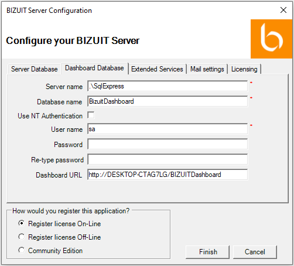

En la pestaña “Dashboard Database”:
- Ingrese el nombre de la instancia de SQL Server donde se instalará la base de datos de BIZUIT Dashboard Server en el paso 4 del procedimiento de instalación de BIZUIT Dashboard Server (o donde ya se encuentra instalada)
- Ingrese el nombre de la base de datos de BIZUIT Dashboard Server a crear en el paso 4 del procedimiento de instalación de BIZUIT Dashboard Server (o el nombre de la base de datos de BIZUIT Dashboard ya creada)
- Seleccione la opción “Use NT Authentication” en caso que el servidor de base de datos donde se instale BIZUIT Dashboard Server esté configurado para trabajar con Autenticación de Windows, caso contrario mantenga deseleccionada la opción.
- Solamente si mantuvo deseleccionada la opción “Use NT Authentication”, complete los campos “User name” y “Password” con el nombre de usuario y contraseña respectivamente de un usuario de la instancia de SQL Server ingresada en el campo “Server Name” que cuente con permisos para lectura y escritura. En el campo “Re-type password” vuelva a ingresar la contraseña ingresada en el campo “Password”
- En el campo “Dashboard URL” el instalador sugerira la dirección URL de BIZUIT Dashboard Server que se instalará en el paso 4 del procedimiento de instalación de BIZUIT Dashboard Server en la forma http://DASHBOARD_MACHINE_NAME/DASHBOARD_VIRTUAL_DIRECTORY, reemplazando DASHBOARD_MACHINE por el nombre de la maquina en la cual instalara BIZUIT Dashboard Server (ejemplo myDashboardServer) y DASHBOARD_VIRTUAL_DIRECTORY por el nombre del directorio virtual del Dashboard (por defecto BizuitDashboard)

Anterior / Siguiente